L'invasione (vera) delle mantidi giganti
Negli ultimi mesi capita sempre più spesso di imbattermi in qualche articolo, o in qualche foto condivisa da amici, che parla di una "invasione di mantidi religiose" in Italia. Il titolo fa un certo effetto, lo ammetto. Ma mi sono incuriosito abbastanza da andare a controllare, e la realtà — come spesso succede — è più interessante e più precisa di come viene raccontata.
La mantide religiosa che tutti conosciamo, quella con cui siamo cresciuti — Mantis religiosa, per usare il nome scientifico — non sta affatto vivendo un boom demografico anomalo. Il fenomeno reale riguarda altri insetti: tre specie di mantidi giganti arrivate da Asia e Africa, che negli ultimi anni si stanno stabilendo con decisione nei giardini, nei balconi e nei parchi italiani.
Chi sono le vere protagoniste
Le nuove arrivate si chiamano Hierodula tenuidentata (la mantide gigante asiatica), Hierodula patellifera (la mantide gigante indocinese) e Sphodromantis viridis (la mantide gigante africana, avvistata soprattutto in Sardegna e Sicilia). Le prime due, quelle più diffuse al Nord, sono state ufficialmente classificate come specie aliene invasive in un studio pubblicato il 9 febbraio 2026 sul Journal of Orthoptera Research, condotto da Roberto Battiston del Museo di Archeologia e Scienze Naturali "G. Zannato" di Vicenza.
Sono insetti decisamente più grandi e appariscenti della nostra mantide di casa: le femmine possono superare gli otto centimetri, hanno un colore verde acceso e uniforme, e un aspetto che le rende quasi impossibili da confondere una volta viste da vicino. Sono presenti in Europa da circa un decennio, ma la loro diffusione ha accelerato bruscamente negli ultimi anni, soprattutto nelle regioni mediterranee.
Perché stanno dilagando
Le ragioni sono più o meno quelle che ci si aspetterebbe in questi anni: il clima più caldo permette loro di sopravvivere e spingersi sempre più a nord, e le città — vere e proprie isole di calore — offrono un ambiente favorevole anche nei periodi più freddi. A questo si aggiunge una capacità riproduttiva notevole: ogni ooteca può contenere fino a 200 piccoli, quasi il doppio di quanto produce la mantide religiosa europea, e un tasso di cannibalismo tra i giovani molto più basso, il che significa che una fetta più ampia della prole arriva effettivamente all'età adulta.
L'impatto sugli ecosistemi locali non è trascurabile: questi predatori vorabili cacciano api, bombi, e in alcuni casi anche piccoli anfibi e rettili. E c'è un dettaglio che trovo particolarmente crudele, in senso quasi darwiniano: attirano con gli stessi segnali chimici i maschi della mantide religiosa autoctona, salvo poi predarli — un meccanismo che sta contribuendo, insieme alla competizione diretta per lo stesso habitat, a mettere sotto pressione la nostra specie di sempre.
Il nemico naturale? Il gatto di casa
Ed ecco la parte che mi ha fatto sorridere di più leggendo lo studio. Analizzando oltre 2.300 segnalazioni raccolte dal pubblico, i ricercatori hanno scoperto che il principale predatore vertebrato delle mantidi giganti aliene è, banalmente, il gatto domestico. Tra gli insetti, il ruolo spetta invece al calabrone europeo.
Naturalmente gli stessi autori dello studio si affrettano a precisare che questo non è "un piano" della natura: i gatti non fanno alcuna distinzione tra specie aliene e specie autoctone, quindi non si può certo sperare che risolvano il problema. Ma la notizia mi ha fatto subito pensare alla mia gatta, Bis — una cicciotta in sovrappeso, gatta domestica classica in tutto e per tutto, che di mantidi temo non gliene importi proprio nulla. Le ho mostrato più di una foto sperando in una reazione di interesse predatorio, giusto per il gusto di vederla in azione; niente. Bis ha uno sguardo che dice chiaramente: "Ho già il piattino pieno, perché dovrei complicarmi la vita con un insetto verde che non si mangia nemmeno bene?". Se l'esercito felino italiano è fatto di gatte pigre e ben nutrite come lei, le mantidi aliene possono dormire sonni relativamente tranquilli.
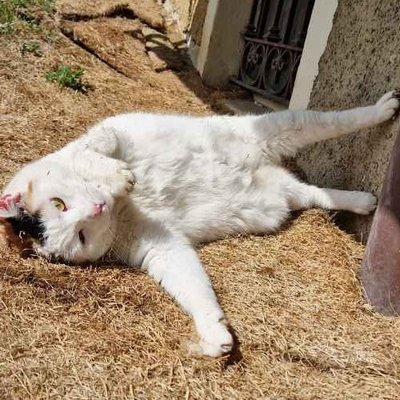
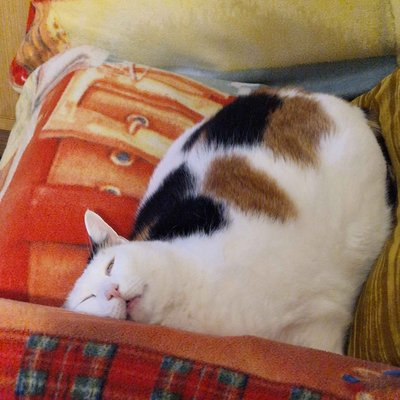
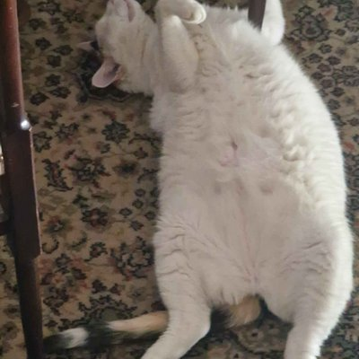
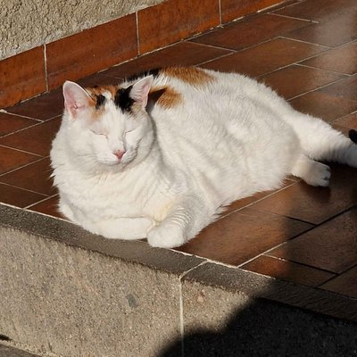
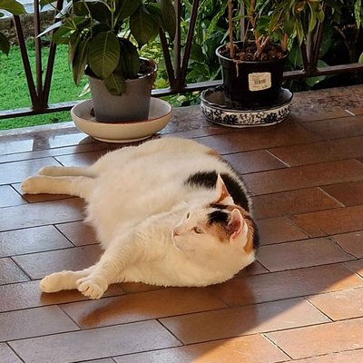
Bis, in tutto il suo assoluto disinteresse per la questione. Fotografie dell'autore.
Perché vale la pena fermarsi a guardarle
Al di là del problema ecologico, che resta serio, c'è anche un lato puramente estetico che vale la pena raccontare. Le mantidi, aliene o autoctone che siano, restano animali stupendi da osservare da vicino: hanno un aspetto che sembra uscito da un film di fantascienza, quella testa triangolare che ruota a guardarti, quelle zampe anteriori ripiegate come lame pronte a scattare. Il fenomeno l'ho notato di persona, in due luoghi molto diversi tra loro: nel mio giardino di casa e, sorprendentemente, nel piazzale del mio luogo di lavoro. Non è un caso che io stesso mi sia ritrovato, nel tempo, con una quantità di fotografie — tutte scattate da me, in situazioni e momenti diversi — sia notturne, con il flash che ne esalta ogni dettaglio quasi metallico, sia diurne, alla luce naturale, a dimostrazione di quanto sia facile lasciarsi catturare dal fascino un po' alieno di questi insetti.
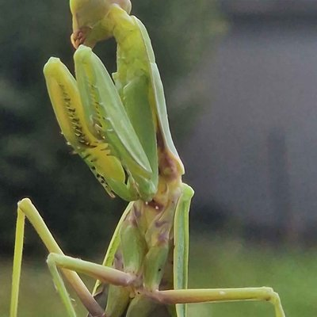
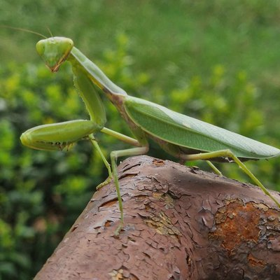
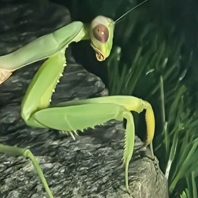
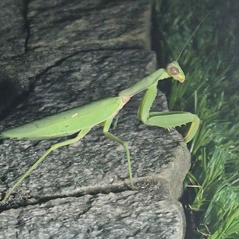
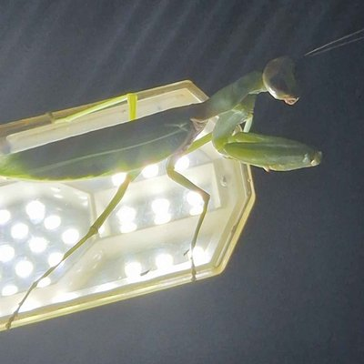
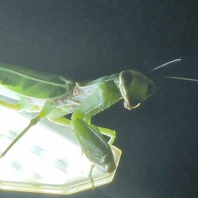
Giorno e notte, giardino di casa e piazzale del lavoro. Fotografie dell'autore.
Cosa fare se ne incontri una
Se ti capita di trovarne una in giardino o sul balcone, gli esperti del Progetto Mantidi Aliene — un'iniziativa di citizen science attiva da anni proprio su questo fronte — raccomandano di non ucciderla a priori: potrebbe trattarsi della mantide religiosa autoctona, che merita tutta la protezione possibile, non certo di essere scambiata per un'aliena. Se invece trovi un'ooteca, meglio non rimuoverla senza essere certi della specie: vale la pena chiedere consiglio a chi se ne intende, o segnalare l'avvistamento ai progetti dedicati.
Non è un'invasione nel senso catastrofico che certi titoli suggeriscono. È però un fenomeno reale, documentato, in crescita costante — e uno di quei casi in cui il cambiamento climatico si vede benissimo, se solo si guarda con un minimo di attenzione a cosa cammina sui nostri balconi in agosto.
Fonti principali: Journal of Orthoptera Research — open.online — geopop.it — leggo.it — ilmessaggero.it — fanpage.it — mantidialiene.netsons.org (Progetto Mantidi Aliene) — ilpost.it — it.wikipedia.org.